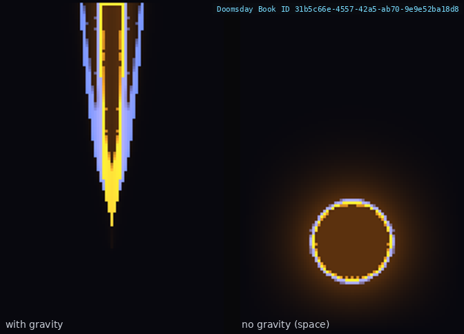

The space room
Two floors above the Delta lab, up its lift: black all round, the stars as points. The floor between is for atmosphere tests. Things here float.
The wing nut flip
Spin a wing nut about its middle axis and it turns over and over by itself. It was seen in orbit, and it works on Earth too: Mike has done it himself at home (and anyone can, flipping a phone or a racket in the air). The lab had to give the same answer without being told it.
09b00b3d-c0c1-420a-8557-ac8ac29e3b92, Mike J HebblethwaiteHow, in D (no π, no cosine). The nut is built from small weights: a round middle and two flat wings. How the weight is spread gives it three axes: one easy to turn (the wings’ span), one hard (the bolt), one in between (across the wings). Each step the spin moves between the axes by the turning rule for a spinning body: each axis’s spin changes by the other two spins, times how unequal the other two axes are. Its tilt is kept as three arrows that turn a little each step and are squared up again.
| spun about | what the lab found |
|---|---|
| the easiest axis | steady, never turned over |
| the hardest axis | steady, never turned over |
| the middle axis | turned over A times (old: 10) in 6CD58 steps, every 8678 steps or so (old: 18,689) |
Why. Printed through the first flip: nearly all the spin is about the middle axis, with a hair about the other two. The two hairs feed each other through the middle spin and grow together; the spin pours out of the middle axis into the other two, the middle spin passes through nothing and comes back the other way round, and the other two hand it back. Nothing is lost: it is handed on and handed back reversed. The middle axis has a neighbour on each side, one easier, one harder, pulling opposite ways, so a wobble feeds itself; the easiest and hardest have both neighbours on one side, so a wobble just circles. In the old maths: Euler’s equations, the intermediate axis theorem.
MAGIC (marked): it is drawn eight times real size, and it is tethered. Code: lang/lab/runs/src/wingnut-src.delta
(the numbers) and lang/lab/src/wingnut-src.delta (in the room).
Track record: the lab against known space results
Known results from orbit, which the lab must give without being told. Every match and every miss is kept here; the known answer is written down before each run is built.
| known result | the lab |
|---|---|
| A wing nut spun about its middle axis turns over and over | Match (above) |
| A candle flame with no gravity is round, dimmer and blue, and may go out | Round: match. Dimmer: match. Blue: miss. Going out: not run long enough (below) |
| Crystals grown in orbit come out larger and more perfect | More perfect: match (5 runs each: 78% full and nearly square in orbit; 65% and a lopsided column on Earth, growing toward the incoming brine). Larger: not tested yet |
| Liquid floating free pulls itself into a ball, and wobbles when touched | to run |
Why: a company sending an experiment into low Earth orbit could have it run here first, the prediction stamped before launch, and compare after the flight. The record above is what such a prediction would stand on.
A candle with and without gravity

31b5c66e-4557-42a5-ab70-9e9e52ba18d8, Mike J HebblethwaiteA slice through a flame in millimetre cells, each step a thousandth of a second, set from real air. Wax vapour comes off the wick and spreads; oxygen spreads in; where both meet and it is hot enough, they burn. With gravity, gas lighter than the air round it (warmer) is pushed up by the heavier air sinking under it; in space nothing is lighter or heavier, so nothing rises. The only difference between the two runs is that one switch.
Round with no gravity (32 by 31 mm; with gravity 81 by 23): matches what is seen in orbit. Dimmer: it
burns about 3% as much: matches. Blue (less soot): miss; the lab’s rough soot rule knows nothing of
cooling yet. The flame with gravity is also too long and widens upward, where a real one is widest near the wick: a
rough edge, said plainly. Code: lang/lab/runs/src/candlespace-src.delta.
Mass from just light
On the space room’s floor, light comes in from three sides of a hex sheet and is passed cell to cell; the white glows are where mass would form (marked as magic: where the light is brightest): six round one. More on the Hebble page.

fc6b8d04-6139-4e50-8ee5-6298e281c560, Mike J Hebblethwaite